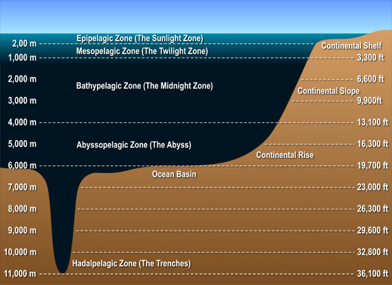

About the Ocean
Physics is a major obstacle in the field of ocean exploration. At great depths, the ocean exhibits zero visibility, extremely cold temperatures, and crushing pressures, according to oceanographer Dr. Gene Carl Feldman of NASA's Goddard Space Flight Center.
